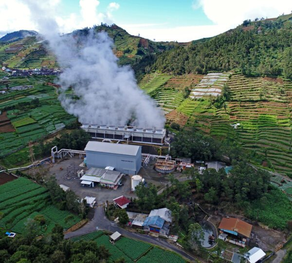

Produk utama01Energi Listrik Hijau
Pembangkit Listrik Tenaga Panas Bumi (PLTP)
Uap panas dari reservoir di bawah tanah memutar turbin dan generator, lalu listriknya dialirkan ke jaringan nasional. Ini produk utama GeoDipa dari PLTP Dieng dan Patuha, tanpa emisi karbon dan tersedia hampir sepanjang waktu.